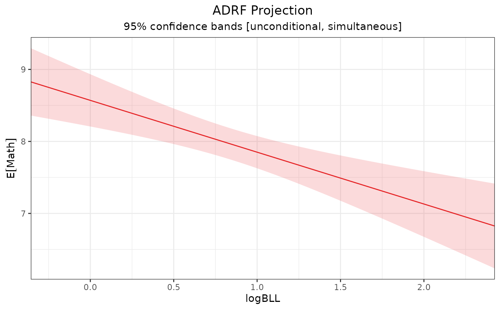
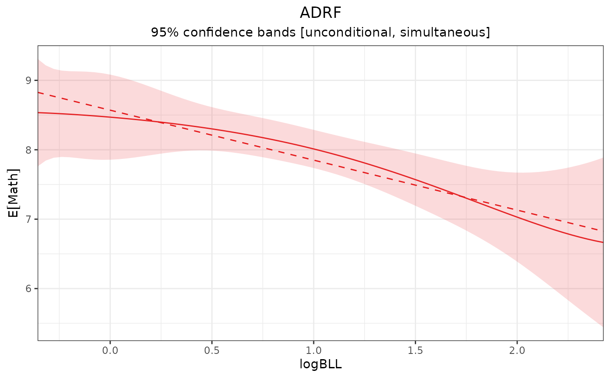

curve_projection() produces a projection of an estimated effect curve onto a specified linear model that is a function only of the treatment to act as a more interpretable summary of the original effect curve.
Usage
curve_projection(x, model, transform = TRUE)
# S3 method for class 'curve_projection'
summary(
object,
conf_level = 0.95,
null = 0,
df = NULL,
ci.type = "perc",
subset = NULL,
...
)
# S3 method for class 'curve_projection'
coef(object, ...)
# S3 method for class 'curve_projection'
vcov(object, ...)
# S3 method for class 'curve_projection'
anova(object, object2, df = NULL, ...)Arguments
- x
an
effect_curveobject; the output of a call toadrf().- model
the projection model to be fit. Can be a one-sided formula corresponding to the projection model or one of the following strings:
"flat","linear","quadratic","cubic".- transform
whether to compute the projection using a transformation of the linear predictor. Allowable options include
TRUE,FALSE, or a function specifying a transformation (of which the inverse is used as the inverse link of the projection model). Ignored unlessobjectis an ADRF. See Details.- object, object2
a
curve_projectionobject; the output of a call tocurve_projection().- conf_level
the desired confidence level. Set to 0 to omit confidence intervals. Default is .95.
- null
the null value for hypothesis test. Default is 0. Set to
NAto omit tests.- df
the "denominator" degrees of freedom to use for the test. Default is to use the residual degrees of freedom from the original model if it is a linear model (in which case an F-test is used) and
Infotherwise (in which case a \(\chi^2\) test is used).- ci.type
string; when bootstrapping or Bayesian inference is used in the original effect curve, which type of confidence interval is to be computed. For bootstrapping, allowable options include
"perc"for percentile intervals,"wald"for Wald intervals, and other options allowed byfwb::summary.fwb(). Whensimultaneous = TRUE, only"perc"and"wald"are allowed. For Bayesian models, allowable options include"perc"for equi-tailed intervals and"wald"for Wald intervals. Default is"perc". Ignored when bootstrapping is not used and the model is not Bayesian.- subset
an optional logical expression indicating the subset of subgroups for which to compute the projection. Can only be used when
bywas supplied to the original call toadrf(), and only to refer to variables defining subgroups.- ...
ignored.
Value
curve_projection() returns an curve_projection object, which inherits from effect_curve. This object is a function that produces estimates of the effect curve projection when called with values of the treatment as inputs. See effect_curve for details on calling this function.
The coefficients and covariance matrix of the fitted projection should be extracted with coef() and vcov(), respectively. summary() produces the coefficients and quantities of interest for inference (test statistics, p-values, and confidence intervals). Using plot() on a curve_projection object plots the projection curve as if it was an effect curve; see plot.effect_curve() for adding the projection curve to the plot of the original effect curve.
Details
The projection model can be thought of as a linear regression of the effect curve estimates on the treatment. Whereas the original effect curve may be complicated and nonlinear, the projection model can be simple and easily interpretable, though it must be understood as a summary of the original effect curve. For example, the original ADRF might have been computed from an outcome model that involves treatment splines, covariates, and treatment-covariate interactions. Though the ADRF is a univariable function (i.e., of only the treatment), it isn't described by a single set of parameters. The linear projection of the ADRF, though, could be a simple linear model, described by an intercept and the slope on treatment. Though only a rough approximation to the ADRF, the linear projection may be more easily interpreted. This concept is described in Neugebauer and van der Laan (2007).
curve_projection() fits this projection model and accounts for the uncertainty in the estimates of the effect curve in computing uncertainty estimates for the projection model parameters. Because the true effect curve is continuous, the model is fit minimizing
$$\int_{a_\text{lower}}^{a_\text{upper}}{\left(\hat{\theta}(a)-\hat{\mathbf{\beta}} B(a) \right)^2 da}$$
where \(\hat{\theta}(a)\) is the effect curve estimate at treatment value \(a\), \(B(a)\) is the basis function representation of \(a\) (i.e., as specified in model), and \(\hat{\mathbf{\beta}}\) is the vector of projection parameters to be estimated. This integral is approximated using a trapezoidal Riemann sum over the effect curve grid points.
The covariance of the projection parameters can be computed using the delta method applied to the estimated covariance of the original effect curve estimates. When bootstrapping or posterior inference are used, the projection is applied to each bootstrap or posterior draw, respectively.
Transform
When transform is specified, the projection minimizes the distance between the original effect curve and the transformed linear predictor; that is, it minimizes
$$\int_{a_\text{lower}}^{a_\text{upper}}{\left(\hat{\theta}(a)-f^{-1}\left(\hat{\mathbf{\beta}} B(a) \right) \right)^2 da}$$
where \(f^{-1}(y)\) is the inverse of the transformation supplied to transform (i.e., corresponding to the inverse link function of a generalized linear model), essentially using nonlinear least squares (NLS) to estimate the effect curve projection. This make the coefficients in the projection model correspond to the coefficients on the linear predictor \(\hat{\mathbf{\beta}} B(a)\). In this case, the projection is not simply a linear projection, but it may still be more interpretable than the original ADRF. For example, if the outcome model was originally fit using logistic regression and transform = TRUE in the call to curve_projection() with model = "linear", the resulting projection would be a logistic curve governed by the intercept and slope of the linear predictor. See Examples for an example of this.
By default, transform is TRUE, which means that when the original outcome model had a family component (e.g., a generalized linear model) and an ADRF is supplied to curve_projection(), the link is automatically supplied to transform and the projection model will be a nonlinear function of the linear predictor. Set transform to FALSE to require that the projection curve be simply the linear predictor with no transformation. Note this can lead to invalid estimates when the outcome is bounded.
Comparing projection models
anova() performs a Wald test comparing two nested projection models. The null hypothesis is that the simpler model is sufficient, i.e., that the coefficients on the terms in the larger model (supplied to object) that are not in the smaller model (supplied to object2) are all zero. Rejecting the null hypothesis implies that the larger model fits better.
References
Neugebauer, R., & van der Laan, M. (2007). Nonparametric causal effects based on marginal structural models. Journal of Statistical Planning and Inference, 137(2), 419–434. doi:/10.1016/j.jspi.2005.12.008
See also
plot.effect_curve()for plotting the effect curve and its projectioneffect_curvefor computing point estimates along the effect curve projectionsummary.effect_curve()for testing hypotheses about the effect curve, such as whether a given projection is sufficientanova()for comparing linear models
Examples
data("nhanes3lead")
fit <- lm(Math ~ poly(logBLL, 5) *
(Male + Age + Race + PIR +
Enough_Food),
data = nhanes3lead)
# ADRF of logBLL on Math, unconditional
# inference
adrf1 <- adrf(fit, treat = "logBLL")
# Linear projection is sufficient for
# characterizing the ADRF
summary(adrf1, hypothesis = "linear")
#> Omnibus Curve Test
#> ───────────────────────────────────────────────────────
#> H₀: ADRF is linear for values of logBLL between
#> -0.3567 and 2.4248
#>
#> P-value
#> 0.375
#> ───────────────────────────────────────────────────────
#> Computed using the Imhof approximation
# Compute the linear projection
proj1 <- curve_projection(adrf1, "linear")
# proj1 <- curve_projection(adrf1, ~logBLL) #same model
proj1
#> An effect_curve object
#>
#> - curve type: ADRF projection
#> - response: Math
#> - treatment: logBLL
#> + range: -0.3567 to 2.4248
#> - projection model: ~logBLL
#> - inference: unconditional
#>
#> Use `plot()` (`?adrftools::plot.effect_curve()`) to plot the curve, `summary()` (`?adrftools::summary.effect_curve()`) to test the curve, or `{object}(values)` (`?adrftools::effect_curve-class()`) to compute estimates.
# Coefficients of the projection model
coef(proj1)
#> (Intercept) logBLL
#> 8.5703241 -0.7198424
summary(proj1)
#> ADRF Projection Coefficients
#> ──────────────────────────────────────────────────────────────
#> Term Estimate Std. Error t P-value CI Low CI High
#> (Intercept) 8.57 0.1494 57.37 < 0.0001 8.277 8.863
#> logBLL -0.72 0.1424 -5.06 < 0.0001 -0.999 -0.441
#> ──────────────────────────────────────────────────────────────
#> Inference: unconditional
#> Confidence level: 95% (t* = 1.961, df = 2473)
#> Null value: 0
# Plot the projection
plot(proj1)

# Plot the projection over the ADRF
plot(adrf1, proj = proj1)

# Compute a cubic projection
proj2 <- curve_projection(adrf1, "cubic")
# proj2 <- curve_projection(adrf1, ~poly(logBLL, 3)) #same model
# Compare cubic to linear projection
anova(proj2, proj1)
#> Wald Test
#> ───────────────────────────────────────────────────────
#> Model 1: ~logBLL + I(logBLL^2) + I(logBLL^3)
#> Model 2: ~logBLL
#>
#> H₀: Extra terms in Model 1 have coefficients equal to
#> 0 (i.e., Model 2 is sufficient)
#>
#> df F P-value
#> 2 1.3587 0.2572
#> ───────────────────────────────────────────────────────
#> Inference: unconditional (df = 2473)